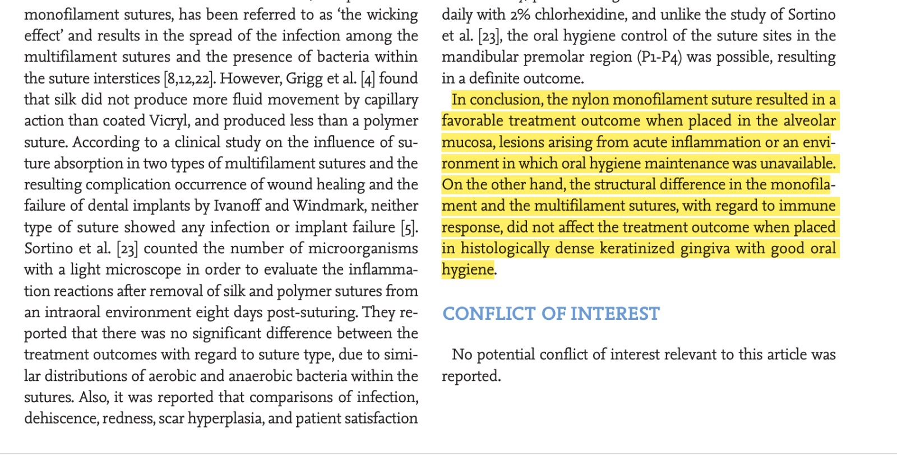

Evidencia científica – Uso de nylon monofilamento en cirugía periodontal
Artículo
Tissue reactions to suture materials
in the oral mucosa of beagle dogs
Journal of Periodontal & Implant Science
Volume 41 • Issue 4 • 2011
Fragmento utilizado como sustento clínico

"El fragmento resaltado muestra que el nylon monofilamento presenta una respuesta tisular favorable y una menor reacción inflamatoria en la mucosa oral, por lo que constituye un material adecuado para procedimientos quirúrgicos. En este caso clínico se utilizó nylon monofilamento 4-0, cuyo calibre fue seleccionado según las características del procedimiento y el criterio clínico del operador."